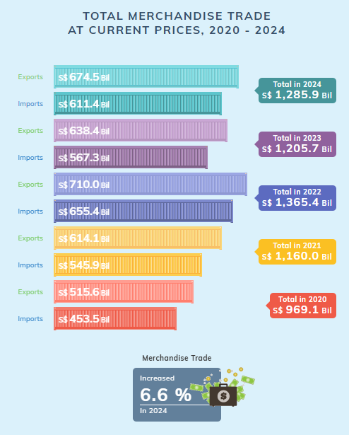
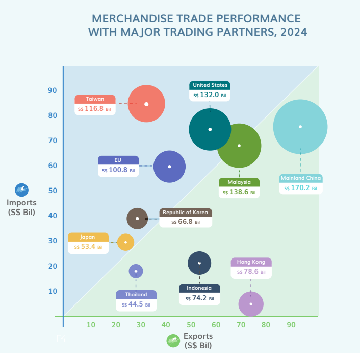
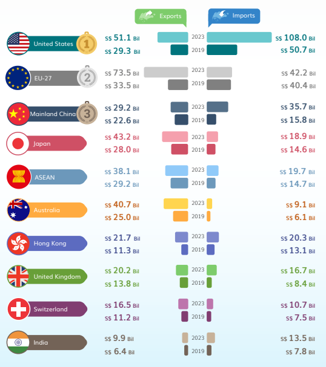
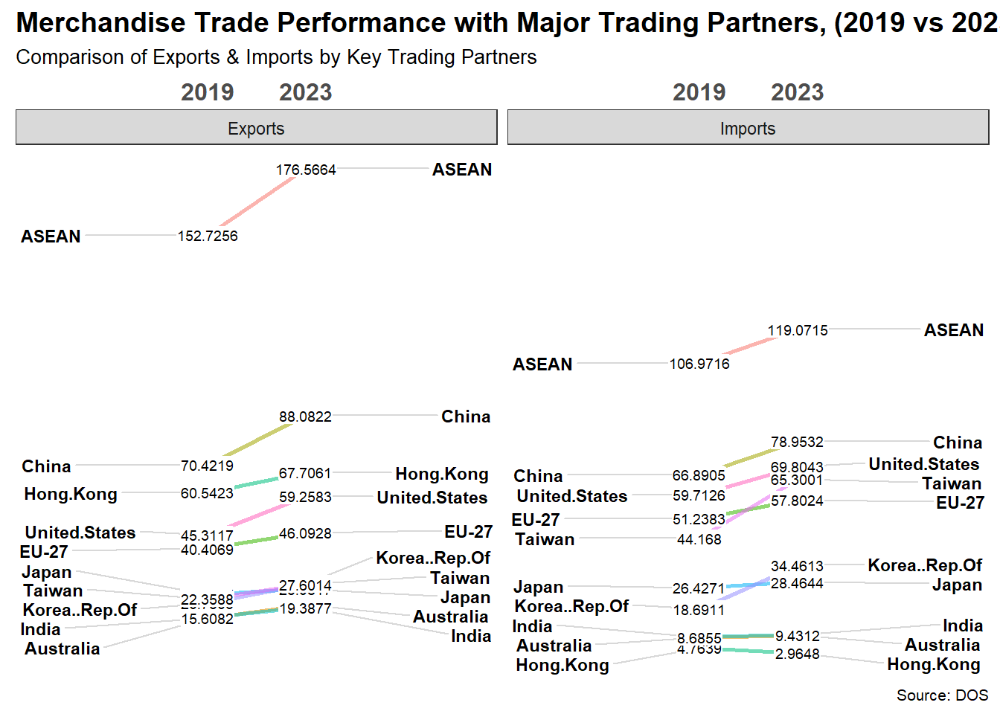
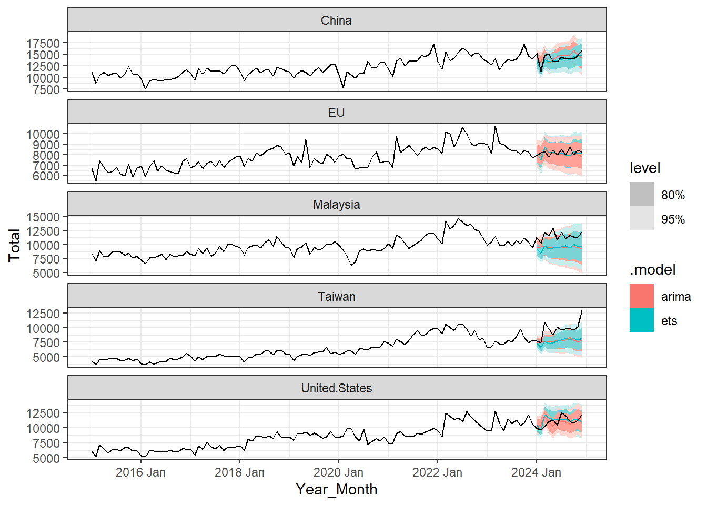

pacman::p_load(tidyverse, readxl, ggplot2, ggthemes, lubridate, plotly,
scales, tsibble, CGPfunctions, feasts, fable)Take-home Exercise 2: Be Tradewise or Otherwise
Overview
As a visual analytics novice, this analysis serves as an opportunity to apply newly acquired techniques to explore and understand the evolving trends in Singapore’s international trade since 2015. By leveraging various data visualization methods, the goal is to critically evaluate three selected visualizations, identifying their strengths and weaknesses, and propose an improved make-over design for more effective data representation. Additionally, a time-series forecasting analysis is conducted to uncover potential future trade patterns, providing insights into trends and fluctuations over time.
1. Getting Started
1.1 Installing packages
1.2 Data extraction and preparation
The data is imported using the read_excel() function from the corresponding Excel sheet, extracting the dataset from range A10:DR171, which captures trade data from 2015 onwards.
imports <- read_excel("data/trade_by_market.xlsx", sheet = "T1",
range = "A10:DR171")
domestic_exports <- read_excel("data/trade_by_market.xlsx", sheet = "T2",
range = "A10:DR171")
re_exports <- read_excel("data/trade_by_market.xlsx", sheet = "T3",
range = "A10:DR171")The data is then transposed into a long format, with the year-month values converted into the first column.
# Transpose the data
imports <- as.data.frame(t(imports))
domestic_exports <- as.data.frame(t(domestic_exports))
re_exports <- as.data.frame(t(re_exports))# Use the first row as column names
colnames(imports) <- imports[1, ]
colnames(domestic_exports) <- domestic_exports[1, ]
colnames(re_exports) <- re_exports[1, ]# Remove the first row now that it's used as column names
imports <- imports[-1, ]
domestic_exports <- domestic_exports[-1, ]
re_exports <- re_exports[-1, ]# Reset row names
rownames(imports) <- NULL
rownames(domestic_exports) <- NULL
rownames(re_exports) <- NULLSince column names contain spaces, which are interpreted as empty strings, they must be properly assigned and cleaned before applying mutate().
# Ensure column names are valid (remove NA or empty names)
colnames(imports) <-
make.names(colnames(imports), unique = TRUE)
colnames(domestic_exports) <-
make.names(colnames(domestic_exports), unique = TRUE)
colnames(re_exports) <-
make.names(colnames(re_exports), unique = TRUE)It is essential to ensure that all columns are in the correct format, with dates structured in year-month format and trade values converted to numeric.
# Convert Date into proper date format
imports <- imports %>%
mutate(Data.Series = yearmonth(Data.Series))
domestic_exports <- domestic_exports %>%
mutate(Data.Series = yearmonth(Data.Series))
re_exports <- re_exports %>%
mutate(Data.Series = yearmonth(Data.Series))# Ensure all columns are numeric except date
imports <- imports %>%
mutate(across(-1, as.numeric))
domestic_exports <- domestic_exports %>%
mutate(across(-1, as.numeric))
re_exports <- re_exports %>%
mutate(across(-1, as.numeric))After the cleaning process, domestic exports and re-exports are merged to compute the total exports, ensuring a comprehensive trade dataset for analysis.
# Summing up values of exports for each column except date
exports <- as_tibble(data.frame(domestic_exports[1], domestic_exports[-1] + re_exports[-1]))2. Total Merchandise Trade at Current Prices (2024)
2.1 Summary

Pros:
1) Use of distinct colors
The graph effectively utilizes different colors for each year, ensuring clear differentiation and improving readability.
2) Reference trade values
Both import and export trade values are clearly labeled, providing essential data points for reference. Additionally, total trade values are highlighted, offering an overview of trends for comparative analysis.
3) Clear summary of trends
The final percentage increase is prominently displayed, allowing readers to quickly grasp key takeaways without needing to analyze the graph in detail.
Cons:
1) Lack of a clear trend line
The graph does not include a distinct trend line to illustrate the overall direction of trade over time, making it more difficult for readers to identify surges or declines at a glance.
2) Misuse of stacked bars
The use of separate stacked bars for imports and exports makes direct comparisons challenging. Readers may struggle to assess the relative proportions of imports versus exports effectively.
3) No interactivity
The graph is static, limiting user engagement. An interactive visualization could allow readers to explore specific data points, filter by year, or hover over elements for additional insights.
2.2 Makeover
Data pre-processing
For this visualization, only the first two columns - year-month and total market value - are selected. The Year is then extracted from the date to facilitate the computation of yearly total values.
# Remove unwanted column
yearly_imports <- imports %>%
select(1:2)
# Extract year
yearly_imports <- yearly_imports %>%
mutate(Year = as.numeric(sub(" .*", "", `Data.Series`)))
colnames(yearly_imports)[2] <- "Total_Imports"yearly_exports <- exports %>%
select(1:2)
yearly_exports <- yearly_exports %>%
mutate(Year = as.numeric(sub(" .*", "", `Data.Series`)))
colnames(yearly_exports)[2] <- "Total_Exports"Next, imports and exports are merged, and the total import and export values for each year are calculated. To align with the reference, data from 2020 to 2024 is selected, and the total trade values for each year are computed.
yearly_summary <- inner_join(
yearly_imports %>% group_by(Year) %>%
summarise(Imports = sum(`Total_Imports`, na.rm = TRUE)),
yearly_exports %>% group_by(Year) %>%
summarise(Exports = sum(`Total_Exports`, na.rm = TRUE)),
by = "Year"
)# Filter Year between 2020 and 2024
yearly_summary <- yearly_summary %>%
filter(Year >= 2020 & Year <= 2024)# Compute Total Trade
yearly_summary <- yearly_summary %>%
mutate(Total = Exports + Imports)Since the dataset contains two trade types in separate columns, they are transformed into a long format for more efficient plotting. Additionally, values are converted from millions to billions to enhance readability and improve the visual appeal of the plot.
yearly_summary <- yearly_summary %>%
pivot_longer(cols = c(Imports, Exports),
names_to = "Trade_Type",
values_to = "Values")yearly_summary <- yearly_summary %>%
mutate(across(c(Total, Values), ~ . / 1000))The data is now structured as follows:
head(yearly_summary)# A tibble: 6 × 4
Year Total Trade_Type Values
<dbl> <dbl> <chr> <dbl>
1 2020 969. Imports 453.
2 2020 969. Exports 516.
3 2021 1160. Imports 546.
4 2021 1160. Exports 614.
5 2022 1365. Imports 655.
6 2022 1365. Exports 710.Visualization
p <- ggplot() +
geom_bar(data = yearly_summary,
aes(x = Year,
y = Total,
text = paste0(
"Total", ": S$ ", format(round(Total, 1), big.mark = ","), " Bil")),
stat = "identity", fill = "gray", alpha = 0.4) +
geom_line(data = yearly_summary,
aes(x = Year,
y = Values,
color = Trade_Type), size = 1.2) +
geom_point(data = yearly_summary,
aes(x = Year,
y = Values,
color = Trade_Type,
text = paste0(
"Year: ", Year, "<br>",
Trade_Type, ": S$ ", format(round(Values, 1), big.mark = ","), " Bil")),
size = 3) +
labs(title = "Total Merchandise Trade at Current Price (2020 - 2024)",
x = "Year",
y = "Trade Value (S$ Bil)") +
theme_minimal() +
theme(plot.title = element_text(face = "bold", size = 16),
legend.position = "none")
ggplotly(p, tooltip = "text") %>% layout(hovermode = "x")The grey bars in the background effectively provide a visual reference for total trade, making it easier to compare the exports and imports trends. Tooltips allow users to hover over data points and view precise values for exports, imports, and total trade in each year. This improves the explorability of the data, especially when analyzing year-over-year changes. The line plot ensures a clear comparison of trade components. The lines give a smooth visualization of trends instead of just using bars.
3. Merchandise Trade Performance with Major Trading Partners (2024)
3.1 Summary

Pros:
1) Clear segmentation
A diagonal reference line effectively divides trade partners into segments, clearly indicating whether each country has a trade surplus or deficit with Singapore. This segmentation enhances the readability of trade imbalances.
2) Distinct colors
The plot utilizes distinct colors for different countries, enhancing visual clarity and differentiation. Additionally, there is a strong contrast between the two trade segments, improving interpretability.
3) Use of bubble sizes
The bubble sizes represent the total trade values for each partner, allowing for an intuitive comparison of trade volumes. Larger bubbles indicate higher trade values, making it easier to assess the relative importance of different countries.
4) Labeled bubbles instead of using a legend
Country names and trade values are directly labeled on the chart without using a legend. This approach improves readability and ensures that key information is immediately accessible without requiring cross-referencing.
Cons:
1) Lack of time-series trend
The visualization only represents trade data for 2024, without showing how trade relationships have evolved throughout the months of the year. As a result, it lacks a time-series perspective that could provide deeper insights into trade fluctuations and seasonal patterns.
2) Static representation
The static nature of the plot limits interactivity, preventing users from hovering over data points to view additional details for each month. Furthermore, due to space constraints, the static visualization can only accommodate a limited number of countries, restricting a more comprehensive comparison.
3.2 Makeover
Data pre-processing
For this visualization, the dataset is first cleaned to exclude data for continents, ensuring a focus on individual countries. The data is then transformed into a long format, consolidating all country names under a single column for consistency.
continents <- c("America", "Asia", "Europe", "Oceania", "Africa")
# Remove the unwanted columns
country_imports <- imports %>%
select(-2, -all_of(continents))
country_exports <- exports %>%
select(-2, -all_of(continents))country_imports <- country_imports %>%
pivot_longer(cols = c(2:last_col()),
names_to = "Country",
values_to = "Imports")
country_exports <- country_exports %>%
pivot_longer(cols = c(2:last_col()),
names_to = "Country",
values_to = "Exports")Next, imports and exports are joined, and only data from the year 2024 is selected.
country_performance <- country_imports %>%
inner_join(country_exports, by = c("Data.Series", "Country"))# Filter year for 2024 only
country_performance <- country_performance %>%
filter(year(Data.Series) == 2024)
# Sort by month year
country_performance <- country_performance %>%
arrange(Data.Series)To align with the reference diagram, EU-27 countries are aggregated accordingly. The cleaned dataset is then used to compute the total imports and exports for each year-month and each country.
eu_countries <- c("Austria", "Belgium", "Bulgaria", "Croatia", "Cyprus",
"Czechia", "Denmark", "Estonia", "Finland", "France",
"Germany", "Greece","Hungary", "Ireland", "Italy",
"Latvia", "Lithuania", "Luxembourg", "Malta",
"Netherlands", "Poland", "Portugal", "Romania",
"Slovakia", "Slovenia", "Spain", "Sweden")
country_performance <- country_performance %>%
mutate(Country = case_when(
Country %in% eu_countries ~ "EU",
TRUE ~ Country))# Summing up Imports and Exports by Year and Country
country_performance <- country_performance %>%
group_by(Data.Series, Country) %>%
summarise(
Imports = sum(Imports, na.rm = TRUE),
Exports = sum(Exports, na.rm = TRUE)
) %>%
ungroup()Additionally, the total trade value is calculated for each row, enabling the identification of the top 20 countries with the highest trade performance in 2024.
# Compute Total Trade of imports and exports
country_performance <- country_performance %>%
mutate(Total = Imports + Exports)# Summarize total trade per country
top_countries <- country_performance %>%
group_by(Country) %>%
summarise(Total_Value = sum(Total, na.rm = TRUE)) %>%
arrange(desc(Total_Value)) %>%
slice_head(n = 20) %>%
pull(Country)country_performance <- country_performance %>%
filter(Country %in% top_countries)country_performance <- country_performance %>%
mutate(across(c(Exports, Imports, Total), ~ . / 1000))
# Display only the month
country_performance <- country_performance %>%
mutate(Data.Series = month(Data.Series, label = TRUE, abbr = TRUE))
# Rename column
country_performance <- country_performance %>%
rename(Month = Data.Series)The data is now structured as follows:
head(country_performance)# A tibble: 6 × 5
Month Country Imports Exports Total
<ord> <chr> <dbl> <dbl> <dbl>
1 Jan Australia 0.903 1.52 2.42
2 Jan Brazil 0.507 0.214 0.721
3 Jan China 6.42 8.79 15.2
4 Jan EU 4.51 3.44 7.96
5 Jan Hong.Kong 0.202 6.29 6.49
6 Jan India 0.957 1.57 2.53 Visualization
gg <- ggplot(country_performance,
aes(x = Imports,
y = Exports,
size = Total,
color = Country,
text = paste(
"Country: ", Country, "<br>",
"Imports: S$", format(round(Imports, 2), big.mark = ","), "Bil", "<br>",
"Exports: S$", format(round(Exports, 2), big.mark = ","), "Bil", "<br>",
"Total: S$", format(round(Total,2) , big.mark = ","), "Bil", "<br>"))) +
geom_point(aes(size = Total, frame = Month), alpha = 0.7) +
ylim(0, max(country_performance$Exports, na.rm = TRUE) * 1.2) +
scale_size_continuous(range = c(2, 20), labels = scales::comma) +
labs(title =
"Merchandise Trade Performance with Major Trading Partners, 2024",
subtitle = "Bubble size represents total merchandise trade value",
x = "Imports (S$ Bil)",
y = "Exports (S$ Bil)",
size = NULL,
color = NULL) +
theme_minimal() +
theme(plot.title = element_text(face = "bold"))
ggplotly(gg, tooltip = "text") %>% layout(hovermode = "closest")The slider at the bottom allows for an interactive time-based view, enabling users to observe seasonal trade fluctuations. This animation enhances trend analysis over time. Also, the legend on the right provides a clear reference for interpreting the countries.
4. Merchandise Trade Performance with Major Trading Partners (2019 vs 2024)
4.1 Summary

Pros:
1) Time-based comparison
The chart effectively enables the comparison of imports and exports over multiple years, covering the period from 2019 to 2023. This facilitates the analysis of trade fluctuations and overall performance across different timeframes.
2) Distinct colors and icons
The visualization uses distinct colors to differentiate between countries, improving clarity and ease of interpretation. Additionally, icons representing top trade partners help highlight key rankings, making it easier to identify major players in Singapore’s trade landscape.
Cons:
1) Lack of clear growth trends
The graph does not incorporate a distinct trend line to illustrate the overall direction of trade from 2019 to 2023. This omission makes it more challenging for readers to quickly identify patterns, surges, or declines in trade performance at a glance.
4.2 Makeover
Data pre-processing
The previously prepared country-level imports and exports data is utilized in this analysis. The datasets are merged, and the Year is extracted to calculate the total trade values for year 2019 and 2023.
country_services <- country_imports %>%
inner_join(country_exports, by = c("Data.Series", "Country"))country_services <- country_services %>%
mutate(Year = as.numeric(sub(" .*", "", `Data.Series`)))# Filter year between 2019 and 2023
country_services <- country_services %>%
filter(Year == 2019 | Year == 2023)
# Sort by year
country_services <- country_services %>%
arrange(Year)
# Remove unwanted year month column
country_services <- country_services %>%
select(-1)To ensure consistency with the reference diagram, EU-27 and ASEAN countries are aggregated accordingly. The cleaned data is then used to compute the total trade values for each year and country.
country_services <- country_services %>%
mutate(Country = case_when(
Country %in% eu_countries ~ "EU-27",
TRUE ~ Country))asean_countries <- c("Brunei", "Cambodia", "Indonesia", "Lao", "Malaysia",
"Myanmar", "Philippines", "Thailand", "Viet.Nam")
country_services <- country_services %>%
mutate(Country = case_when(
Country %in% asean_countries ~ "ASEAN",
TRUE ~ Country))# Summing up Imports and Exports by Year and Country
country_services <- country_services %>%
group_by(Year, Country) %>%
summarise(
Imports = sum(Imports, na.rm = TRUE),
Exports = sum(Exports, na.rm = TRUE)
) %>%
ungroup()Similarly, the top five countries with the highest total trade values across 2019 and 2023 are identified.
# Compute Total Trade of imports and exports
country_services <- country_services %>%
mutate(Total = Imports + Exports)# Summarize total trade per country
top_countries_services <- country_services %>%
group_by(Country) %>%
summarise(Total_Value = sum(Total, na.rm = TRUE)) %>%
arrange(desc(Total_Value)) %>%
slice_head(n = 10) %>%
pull(Country)country_services <- country_services %>%
filter(Country %in% top_countries_services)country_services <- country_services %>%
pivot_longer(cols = c(Exports, Imports),
names_to = "Trade_Type",
values_to = "Value")To construct a slope graph, the year variable is converted into a factor to ensure proper categorical alignment for visualization.
country_services <- country_services %>%
mutate(Year = as.factor(Year))
country_services <- country_services %>%
mutate(across(c(Value), ~ . / 1000))The data is now structured as follows:
head(country_services)# A tibble: 6 × 5
Year Country Total Trade_Type Value
<fct> <chr> <dbl> <chr> <dbl>
1 2019 ASEAN 259697. Exports 153.
2 2019 ASEAN 259697. Imports 107.
3 2019 Australia 23946. Exports 15.4
4 2019 Australia 23946. Imports 8.54
5 2019 China 137312. Exports 70.4
6 2019 China 137312. Imports 66.9 Visualization
p <- newggslopegraph(country_services, Year, Value, Country,
Title = "Merchandise Trade Performance with Major Trading Partners, (2019 vs 2023)",
SubTitle = "Comparison of Exports & Imports by Key Trading Partners",
Caption = "Source: DOS") +
facet_wrap(~Trade_Type, scales = "free_x")
p
The slope graph provides good comparison of exports and imports across two time periods (2019 vs 2023). It clearly shows trade growth or decline for each trading partner. The left side represents exports, and the right side represents imports, making it easy to compare both components of trade. The separation helps users see which countries have a trade surplus vs. deficit.
5. Merchandise Trade Forecasting
5.1 Data pre-processing
In this analysis, the previously prepared country-level imports and exports data is utilized. The datasets are merged, and only data from years prior to 2025 is selected to ensure consistency with historical trends. For forecasting, the five major trading partners are identified, with EU-27 countries aggregated into a single entity to represent one of the trading partners. The data is then converted into a tibble() object to facilitate time-series analysis and modeling.
yearly_country <- country_imports %>%
inner_join(country_exports, by = c("Data.Series", "Country")) %>%
filter(year(Data.Series) != 2025)
colnames(yearly_country)[1] <- "Year_Month"
yearly_country <- yearly_country %>%
mutate(Country = case_when(
Country %in% eu_countries ~ "EU",
TRUE ~ Country))
# Summing up Imports and Exports by Year Month and Country
yearly_country <- yearly_country %>%
group_by(Year_Month, Country) %>%
summarise(
Imports = sum(Imports, na.rm = TRUE),
Exports = sum(Exports, na.rm = TRUE)
) %>%
ungroup()
yearly_country <- yearly_country %>%
as_tsibble(index = Year_Month, key = Country)yearly_country <- yearly_country %>%
mutate(Total = Exports + Imports)
top_countries <- top_countries[1:5]
yearly_country <- yearly_country %>%
filter(Country %in% top_countries)The data is now structured as follows:
head(yearly_country)# A tsibble: 6 x 5 [1M]
# Key: Country [1]
Year_Month Country Imports Exports Total
<mth> <chr> <dbl> <dbl> <dbl>
1 2015 Jan China 4951 6338. 11289.
2 2015 Feb China 4084. 4744. 8828.
3 2015 Mar China 4320. 6174. 10494.
4 2015 Apr China 4987. 6154. 11140.
5 2015 May China 4554. 5896 10450.
6 2015 Jun China 4686. 6081. 10767.5.2 Fitting models
Next, the training dataset is extracted, comprising data from years prior to 2024. This dataset is used to fit two time-series forecasting models: the Exponential Smoothing State Space Model (ETS) and the AutoRegressive Integrated Moving Average (ARIMA) model.
train_data <- yearly_country %>%
mutate(Type = if_else(
`Year_Month` >= yearmonth("2024 Jan"),
"Hold-out", "Training")) %>%
filter(Type == "Training")model_fit <- train_data %>% model(
ets = ETS(Total),
arima = ARIMA(Total)
)Forecast accuracy measures, such as Root Mean Squared Error (RMSE), Mean Absolute Error (MAE), Mean Absolute Percentage Error (MAPE), and Mean Absolute Scaled Error (MASE), are computed for both models across different countries. The models are ranked based on accuracy. In general, ETS outperforms ARIMA for most countries, as reflected in its lower RMSE, MAE, MAPE, and MASE values. However, the Mean Error (ME) remains high across all models, indicating a significant bias in the predictions.
model_fit %>% accuracy() %>% arrange(Country)# A tibble: 10 × 11
Country .model .type ME RMSE MAE MPE MAPE MASE RMSSE ACF1
<chr> <chr> <chr> <dbl> <dbl> <dbl> <dbl> <dbl> <dbl> <dbl> <dbl>
1 China ets Trai… 56.5 839. 645. 0.0944 5.32 0.524 0.555 0.0439
2 China arima Trai… 26.2 916. 700. -0.197 5.83 0.568 0.606 -0.0355
3 EU ets Trai… 21.1 586. 467. -0.178 5.98 0.566 0.574 0.0238
4 EU arima Trai… 30.6 656. 506. -0.120 6.49 0.615 0.642 -0.0436
5 Malaysia ets Trai… 8.64 769. 588. -0.348 6.18 0.413 0.413 0.0713
6 Malaysia arima Trai… 9.71 902. 709. -0.481 7.47 0.498 0.484 0.0219
7 Taiwan ets Trai… 19.4 475. 355. 0.0360 5.44 0.334 0.342 0.0965
8 Taiwan arima Trai… 33.9 567. 421. 0.136 6.63 0.396 0.408 0.00319
9 United.Sta… ets Trai… 51.1 593. 441. 0.183 5.11 0.431 0.459 -0.0369
10 United.Sta… arima Trai… 60.0 712. 543. 0.280 6.39 0.531 0.552 -0.0282 5.3 Forecasting and visualization
After fitting the models, trade values for the upcoming year are forecasted and compared against the hold-out dataset. Two forecasting models, ETS (blue) and ARIMA (red), are applied, each accompanied by 80% and 95% confidence intervals.
model_forecast <- model_fit %>% forecast(h = "12 months")
model_forecast %>% autoplot(yearly_country)
Notably, while the predicted trend line is clearly visible, the confidence intervals are relatively wide, suggesting substantial uncertainty in the predictions. This dispersion may be attributed to high trade volatility and external economic factors that are difficult to capture using simple time-series forecasting models. Furthermore, the predicted trend does not align well with historical data, highlighting the inherent challenges of accurately forecasting trade values. The complexity and unpredictability of international trade, influenced by geopolitical events, policy changes, and macroeconomic conditions, contribute to the limitations of conventional forecasting techniques.